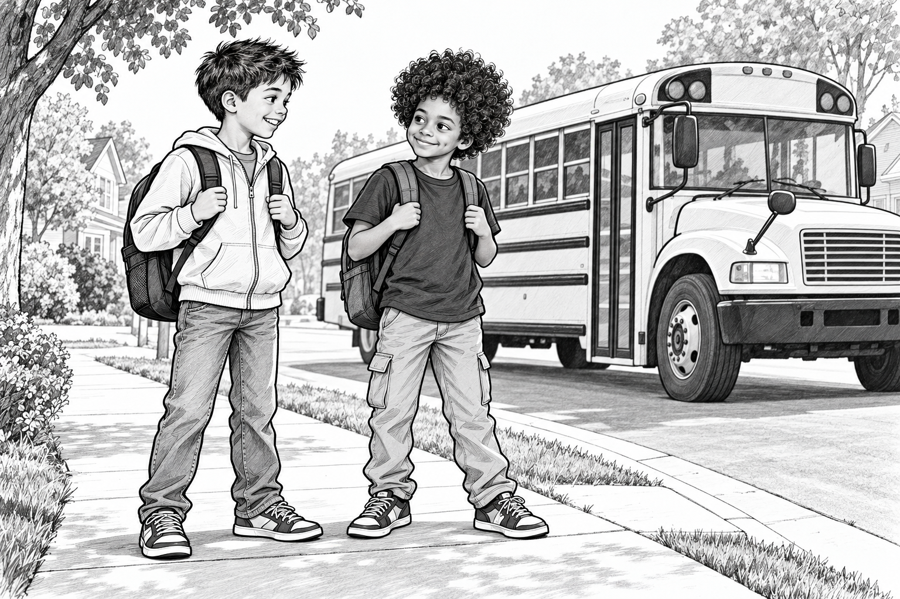
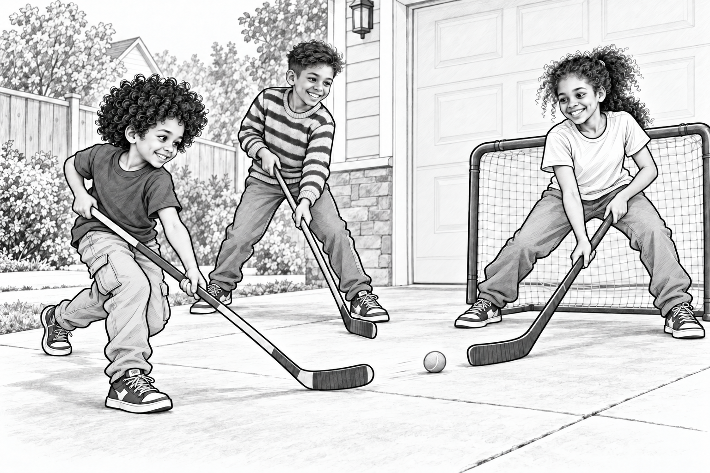

Izzy and the Bus-Stop Face-Off

Morning Line-Up
Izzy was ten. He loved hockey, especially the moment when a puck slipped past a goalie and everybody shouted at once.
He also loved telling Raph that Raph's favourite soccer team wasn't the best.
These were separate hobbies.
Mostly.
At breakfast, Raph was still talking about an old World Cup game when Izzy checked the time.
“Your evidence will have to wait.”
“It's excellent evidence.”
“My bus is yellower than yours.”
“That isn't evidence!”
Izzy grinned and headed out.
Ruth and Raph took the city bus to their school. Izzy took the yellow school bus, and his good friend Adam met him at the bus stop.
Adam was already there.
“Guess what I practised yesterday,” he said.
“Hockey?”
“You always guess hockey.”
“I'm usually right.”
This time, he was.
A Team on Paper
They sat together on the bus.
Adam pulled a notebook from his bag and drew a hockey rink.
“We're designing a team.”
Izzy pointed at the goal.
“We need an amazing goalie.”
“Obviously.”
“And somebody who passes.”
“Obviously.”
“And a snack manager.”
Adam added a little box outside the rink.
“Very important position.”
They drew arrows, moved imaginary players and argued about the team name.
The Thunder Pucks sounded good.
The Flying Pancakes sounded better.
By the time the bus arrived, their notebook contained one team, fourteen arrows and a pancake wearing a helmet.

The Next Best Thing
After school, Izzy invited Ruth and Raph to play street hockey. They set up goals in the driveway and used a soft ball.
“I'm the fastest,” Ruth said.
“I'm good at passing,” Raph said.
Izzy lifted his stick.
“Our team is called the Flying Pancakes.”
Ruth laughed. “Do we have a uniform?”
“Adam is working on the helmet.”
Raph passed the ball to Izzy.
Izzy shot.
Ruth blocked it.
“Saved!” she shouted.
Izzy laughed so hard he nearly missed the rebound.
There was no ice, no big arena and no roaring crowd.
But there were friends, a ball and another chance to try.
For Izzy, that was a pretty excellent afternoon.
He couldn't wait to tell Adam about it at the bus stop tomorrow.
After the Story
What would you name Izzy and Adam's hockey team, and what would its mascot look like?